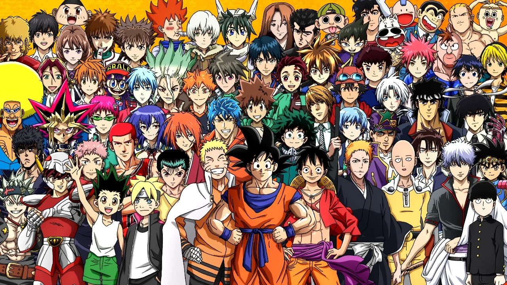

Este é um tributo aos animes
Os animes são uma forma de arte japonesa que tem conquistado fãs em todo o mundo. Eles abrangem uma ampla variedade de gêneros, desde ação e aventura até romance e comédia. Os animes são conhecidos por suas histórias envolventes, personagens cativantes e animação de alta qualidade. Eles têm um impacto significativo na cultura pop global, influenciando moda, música e até mesmo a indústria cinematográfica. Este tributo é dedicado a todos os fãs de anime que apreciam essa forma única de entretenimento.

Biografia
Os animes são uma forma de arte japonesa que tem conquistado fãs em todo o mundo. Eles abrangem uma ampla variedade de gêneros, desde ação e aventura até romance e comédia. Os animes são conhecidos por suas histórias envolventes, personagens cativantes e animação de alta qualidade. Eles têm um impacto significativo na cultura pop global, influenciando moda, música e até mesmo a indústria cinematográfica. Este tributo é dedicado a todos os fãs de anime que apreciam essa forma única de entretenimento.